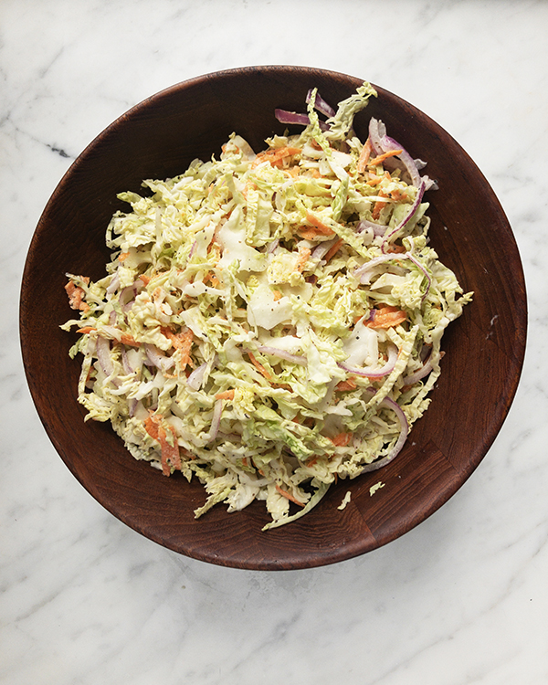

Tangy Slaw Recipe

Description
A surprisingly tasty take on coleslaw. The tangy taste from the vinegar and extra flavour from the celery salt will leave you wanting more and never settling for any old coleslaw. >:)
Ingredients
- 1/2 a medium savoy cabbage, shredded
- 1 large carrot grated
- 1/2 cup mayo
- 1 1/2 tbsp sugar/sweetener
- 3 tbsp applecider vinegar
- 1/2 tsp black pepper
- 1/2 tsp celery salt
- 1/4 tsp garlic powder & onion powder
Instructions
- Mix all ingredients except vegetables in a large bowl
- Add the cabbage and carrots, incorporate dressing thorougly. You can serve immediately, but tastes better if it sits a day or two before serving.